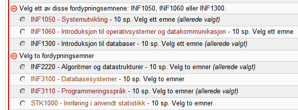

Presentasjonen kommer til å handle om:
Vi tar utgangspunkt fra et av målene i stillingsbeskrivelsen:
"samt å foreta en grundig gjennomgang av hva som skal til for at prototypen kan utvikles til et fullstendig system som kan tas i bruk av hele insituttet (eller universitetet)"
Før man besvarer dette og forklarer hva som skal til før systemet kan tas i bruk, må vi vite →
Vi hadde flere alternativer å ta utgangspunkt i →
Veldig vage krav, enorm frihet.
Under en av diskusjonene nevnte Roger to viktige nøkkelord:
sukker.no og raidfinder
Derfor skiftet vi fokuset fra en generisk oppslagstavle, mot et enklere og mer tilfeldig matchesystem.
Videre: hva og hvorfor, ikke hvordan (ingen tekniske detaljer) →
Fra alternativene som: partify, bro, sorteringshatten og AKG valgte vi Stein Michaels forslag:
Mange alternativer; men heller noe enkelt og gjennomførbart i løpet av fem uker som kan samtidig plotte veien videre.
For de fleste studenter har kollokviesamarbeid en god effekt på opplevelsen av faglig tilhørighet, motivasjon og mestring. For å oppmundre til slikt samarbeid og hjelpe studenter med å finne hverandre, ønsker vi å utvikle en prototype av et nettbasert system populært kalt "kollokviegenerator".
I tillegg til å sette sammen studenter ut fra deres behov (tema, nivå, ønsket tidspunkt, ...), er det ønskelig at systemet inneholder funksjonalitet for å kunne be om hjelp fra gruppelærere, studieveiledere eller andre.
En del av jobben vil bli å utvikle detaljerte krav til et slikt system, samt å foreta en grundig gjennomgang av hva som skal til for at prototypen kan utvikles til et fullstendig system som kan tas i bruk av hele insituttet (eller universitetet).
Hvis studentene skal grupperes etter behov, så bør gruppene være distinkte: altså de må kunne betegnes på andre måter enn vanlige grupper med fag, gruppenummer og klokkeslett (f.eks. INF1010, Gruppe 4).
Her finnes det to veier å gå:
Med datalingvistiske termer: den preskriptive og den deskriptive spesifikasjonen.
Den preskriptive spesifikasjonen bestemmer hva som er riktig, mens deskriptive påstår at det organiske dominerer over noe som er syntetisk (tenk nynorsk vs. bokmål)
Fag og tema bestemmes på forhånd.
Vi lager et tre studentene kan navigere i og velge det de ønsker. (akkurat som i studentweb er det ikke mulig å lage nye fag eller grupper).
Brukere bestemmer selv hva de kan velge; konsensus belønnes
Enkleste måten å utrykke det er ved bruk av tagger:
Vi tillater brukerdefinerte grupper, men lar fagansvarlige sette opp enten begrensinger på hva som kan definerers, eller angi predefinerte forslag for å tvinge data mot en gyllen standard.
Slik introduserer vi en helt ny måte å samarbeide på.
Vi lager grupper for ett eller flere faglige tema, istedenfor å samarbeide etter helt irrelevante faktorer som:
(ingen fordommer her, kun observasjonene fra `3417 Assembler`)
Studentene kan danne egne ad-hoc grupper, og oppløse de når samarbeidet ikke lenger er aktuelt: for eksempel når alle har forstått hvordan man balanserer binære trær.
Dette gir mulighet å både utbedre og utforske.
Studentene som sliter med bestemte tema kan danne grupper til å se akkurat på de temaene de sliter med.
Studentene som vil ha større utfordringer danner grupper hvor de kan samarbeide om mer avanserte deler av pensumet.
Tilbake til stillingsbeskrivelsen:
I tillegg til å sette sammen studenter ut fra deres behov (tema, nivå, ønsket tidspunkt, ...), er det ønskelig at systemet inneholder funksjonalitet for å kunne be om hjelp fra gruppelærere, studieveiledere eller andre.
Systemet er tilrettelagt for å be om hjelp fra orakler eller gruppelærere (i deres arbeidstid).
En av begrensingene som vil rasjonaliserere og forbedre livet til studieoraklene er:
Kun kollokviegrupper (med flere enn to medlemmer) skal kunne be om/ha rett til hjelp.
Slik introduserer vi en veldig sunn fremgangsmåte for å få hjelp:
Får ikke instituttet studieorakler, så kan gruppelærere hjelpe disse gruppene, enten over e-post eller under gruppetimene sine (det er ofte få elever midt og sent i semesteret, selvfølgelig untatt store intro-emner som INF1010).
Per dags dato er algoritmen ganske lite fleksibel i forhold til antall studenter per gruppe. Verdien er global og ikke kan fastsettes per gruppe/bøtte.
Etter et par samtaler med gruppelærere fant vi ut at den beste størrelsen for en kollokviegruppe, altså en gruppe uten bestemte krav om størrelse eller tema er:
Tillater effektiv avstemning om interne spørsmål (alltid en avgjørende stemme).
Grupper større enn tre har tendens til å være ineffektive, men kan allikevel dannes med hensyn til frafall.
Behovet for kollokviegeneratoren understreker et viktig faktum: det sosiale samarbeidet og deltakelse i relevante aktiviteter er marginalt.
Undersøkelsene som gjennomføres blant aktive studenter sier lite om de faktiske forhold. De er en feil målgruppe for undersøkelsene fordi at de
Den ekte målgruppen kan være ukomfortabel med samarbeid. Dette gjør at de gruppene vi danner er aldri perfekte og kan lett falle i fra hverandre hvis medlemene ikke opplever høy grad av tilhørighet.
Grunnene til frafall er en kompleks affære og må diskuteres av psykologer som spesialiserer seg på unge informatikere.
Man kan ikke se på frafall i gruppene som på noe utelukkende negativt. Frafall har også en positiv side:
Frafall er gruppens immunforsvar, en naturlig tilpassningsprosess. Gruppen blir kvitt de studentene som kan potensielt være kontraproduktive og hindre andre i å føle komfort og mestring.
Så et bedre spørsmål er →
Nei.
Men vi kan hidre de negative sidene med frafall: altså det at det blir for få i gruppen.
Derfor er det optimalt å innføre en standard størrelse på 4 studenter.
3 er vår opprinnelige optimale størrelsen, så ved frafall av en student (noe som ofte skjer rett etter dannelsen) er gruppestørrelsen fortsatt optimal.
... mens 2 studenter (ved frafall av 2 andre) er fortsatt en gruppe.
Et mål med videreutviklingen er å lage definerbare bøtter slik at et fag som for eksempel INF2220 kan få en egen bøtte der emneadministrasjonen/fagansvarlig skal kunne bestemme følgende parametere:
I prototypen skjer alt av kommunikasjonen mellom brukere via e-post.
Allerede en pålitelig måte å samarbeide og kommunisere på, mindre funksjonalitet i systemet.
Utfordring med dagens løsning: ingen garantier for at den som trekker seg fra gruppen vil slutte å motta mail.
Løsning: en e-mail proxy som gir hver gruppe en alias-adresse. For eksempel: gruppe1551732249@unifi.ifi.uio.no
Andre løsninger: intern chattesystem for hver gruppe. Innebærer at brukeren må inn på siden for å følge med i samtalen.
Denne funksjonen inneholder reglene for hvordan foholdet mellom ønskene verdsettes. De gir emneadministrasjonen kontroll over hvordan gruppesammensetningen skjer. Dette er spesielt aktuelt i forhold til mindre emner som har få studenter, men må danne grupper (eller) par* selv om likheten er svært lav.
Kan også tillate tilfeldig sammensetning.
Gjennom denne kan man også introdusere et synonymlag: et nettverk som avgjør om taggene Oppgave 2.2 og Kapittel 2 handler om _nesten_ det samme.
Slik kan man danne grupper av ønsker som semantisk sett ligger tett mot hverandre, men syntaktisk er usammenlignbare.
Hvis prosjektet skal videreutvikles må vi bli enige om utviklingsstadier og frister.
Faget som er aktuelt for testing er INF1080.
Beste tidspunkt for testing i midten av semesteret eller i forberedelsestiden før eksamen.
Må ha veiledningsmøtene og tilbakemelding.
Martin forlater prosjektet, men er tilgjengelig for mindre oppgaver som ikke kommer i veien for masteroppgaven hans.
Ilya har søkt om å videreutvikle prosjektet som en del av INF3331 frem til 2013.
Ifølge foreleseren er det mulig å verve flere studenter til dette prosjektet
Prototype på djangos testeserver er ikke det samme som på en offentlig produksjonsserver.
Andre issues som må fikses før deployment ligger i vår github repository
https://github.com/unifi/unifi/issues?state=openBør ikke overbelastes med features og må fortsatt være et minimalt system.
Men kan være ubrukelig på prototypenivå.